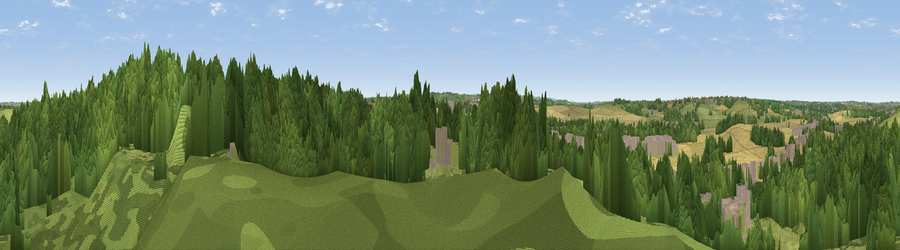

Viewpoint near Upper Sundon
#34346 in England · top 56% of its area beats it · near Upper SundonThe view, rendered

A 360° render of this exact spot computed from the terrain model, tree cover and land cover — summer colours, afternoon light, calibrated against photographs of famous viewpoints. Real trees, hedges and buildings will differ in detail.
The panorama
Grey silhouette: terrain skyline in each direction (720 bearings, Earth curvature and refraction included). Dashed green: skyline with trees (+15 m) and buildings (+8 m) as obstacles. Blue strip: how far the ground is visible on each bearing.
Where the view opens
Wedge length = distance to the farthest visible ground on that bearing (vegetation-aware). Rings at 10, 25 and 50 km.
What fills the view
57% woodland · 27% grassland · 10% cropland · 6% built-up
Angular shares of the visible panorama (visual magnitude), not map area. Landscape diversity 0.47 (0–1 Shannon).
Key numbers
More beautiful places nearby
The staircase of upgrades: each row has a higher view potential than everything closer. Driving times are estimates from straight-line distance, calibrated against real road routing — check an actual route before setting out.
| Place | Direction | Drive | Score |
|---|---|---|---|
| Viewpoint near Upper Sundon | N · 1 km | ~3 min | 43.9 |
| Viewpoint near Upper Sundon | NE · 1 km | ~4 min | 44.1 |
| Viewpoint near Sharpenhoe | NE · 4 km | ~9 min | 57.6 |
| Viewpoint near Hexton | ENE · 6 km | ~12 min | 64.2 |
| Viewpoint near Church End | SSW · 8 km | ~15 min | 65.8 |
| Beacon Hill | SW · 13 km | ~24 min | 74.1 |
| Viewpoint near Halton | SW · 23 km | ~38 min | 74.3 |
| Coombe Hill Monument | SW · 28 km | ~45 min | 75.5 |
51.93792, -0.49258 · source: screening · position refined by local search. Computed location — check access rights before visiting.